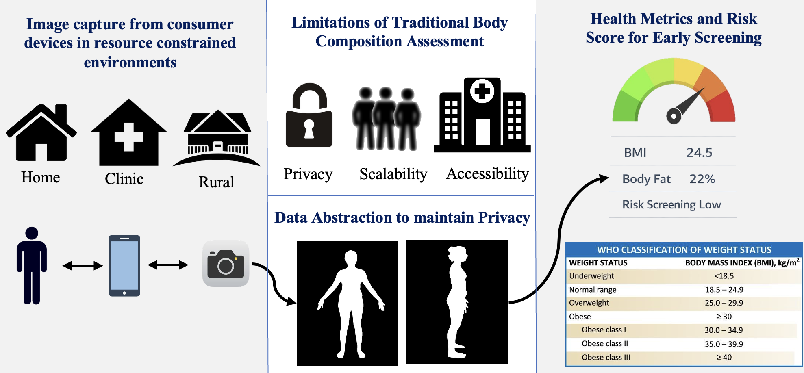
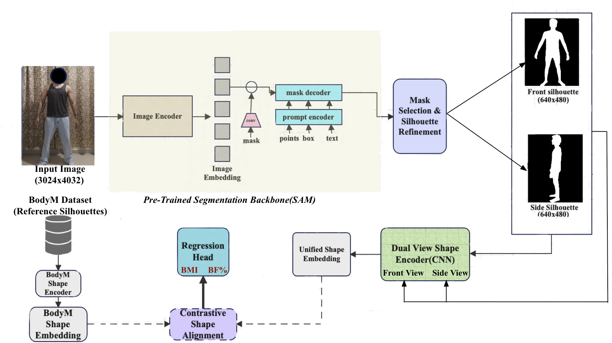

SOLVE Venture Incubation Program 2026
A privacy-first route from research-grade silhouette anthropometry to a licensed wellness product, followed by evidence-led clinical expansion.
BodyFit estimates waist, hip, and chest circumference from paired front and side silhouettes. The phone removes face, skin, and texture before server processing, so raw unclad RGB images do not need to leave the device. The first commercial product sells measurements for wellness and fit, not diagnoses.
For roughly 180 years, BMI has reduced body size to weight divided by height squared. It cannot distinguish muscular mass from abdominal fat distribution, which limits its usefulness for individual screening.
Mobile scanners often ask users to upload sensitive RGB photos. BodyFit converts each capture into a binary silhouette on the device, then discards identifying visual detail before any server request.
A front image captures width but not sagittal depth. A side view adds the missing geometry, which materially improves circumference estimates in the current benchmark.

What carries forward and what changes

Commercial implementation. YOLOv11-nano or MediaPipe produces the mask on device. Twin ResNet-18 encoders align both views in a 512-dimensional InfoNCE space, and linear heads predict waist, hip, and chest.
Deliberate correction. The paper's BMI and body-fat heads are not venture outputs. WHtR and WHR are derived from measured girths; BRI is exploratory. Capture guidance and field validation replace any claim that a loose 3D IoU gate certifies clothing quality.
Four phases across 18 months
Secure IRB approval and collect at least 500 consented front and side capture pairs with calibrated tape measurements. Build a quantized segmentation pipeline for supported phones and define capture acceptance criteria.
Exit evidence
Commercially unencumbered dataset, consent and governance pack, baseline error report, and on-device silhouette prototype.
Package the measurement service as a REST API and mobile SDK. Run a closed beta with two corporate wellness programs and one bespoke tailoring brand.
Exit evidence
Three signed pilot agreements, SDK integration time, capture completion rate, measurement error by subgroup, and remake or engagement baseline.
License the API and white-label SDK to fitness platforms, gym chains, wellness programs, and apparel operators. Add a self-serve developer tier after pilot support costs and unit economics are known.
Exit evidence
Paid contracts, production service levels, cohort retention, gross margin per capture, and documented privacy controls.
Run a prospective observational study with a healthcare partner to test cardiometabolic triage use. Prepare the clinical evidence, quality system, risk file, and intended-use documentation for UAE EDE and EU MDR review.
Exit evidence
Locked study protocol, prospective results, regulatory classification memo, clinical evaluation plan, and filing readiness decision.
Prove a costly workflow before widening the market
Use repeatable waist and WHtR trends for general wellness. Prove participation, repeat capture rate, and measurement stability without disease-specific claims.
Add circumference progress to existing coaching products. Prove SDK conversion, retention lift, and low support cost.
Reduce manual measurement time, size exchanges, and remakes. Prove agreement with professional tape measurements and lower scrap cost.
B2B API usage. Tiered per-capture pricing, with volume commitments once production demand is measured.
Enterprise SDK. Annual white-label license plus implementation and support for branded mobile experiences.
Clinical SaaS later. Contract pricing only after prospective evidence and the required regulatory route are clear.
A proprietary, consented dataset is the durable asset. Phase 1 limits intended use to measurement, sizing, and low-risk general wellness. Clinical claims follow prospective evidence and formal classification. Diagnostic-decision software may be Class IIa under MDR Rule 11; UAE marketing authorization would proceed through EDE.
| Criterion | BodyFit | BMI | Smart scales | Cloud RGB scanners such as 3DLOOK |
|---|---|---|---|---|
| Direct circumference output | Waist hip chest | No | Usually no | Yes |
| Resolves side depth | Dual view | No image input | No | Multi-view |
| Raw unclad RGB sent to cloud | No by design | No | No | Service dependent |
| Primary commercial use | Wellness tracking and fit | Population weight screening | Weight and composition trends | Apparel fit and body measurement |
Allocate against the next proof, not a speculative feature list
Priority: replace the non-commercial research dataset before funding product scale.
Allocation: data 35% | edge and compute 25% | engineering 25% | regulatory and IP 15%
| Workstream | Share | Funded work | Milestone deliverable |
|---|---|---|---|
| Proprietary data and clinical benchmarks | 35% | IRB process, recruitment, calibrated tape protocol, consent, secure storage, annotation, and subgroup evaluation. | 500 or more consented pairs; data rights register; locked cohorts; benchmark report. |
| Edge and GPU compute | 25% | On-device segmentation, quantization, supported-device profiling, secure inference, and training compute. | Binary masks on supported devices; no raw RGB in server payloads; measured latency and failure rate. |
| Engineering and SDK | 25% | REST API, mobile integration, capture guidance, tenant controls, monitoring, documentation, and pilot support. | Versioned SDK and API; three pilot integrations; service levels; developer onboarding. |
| Regulatory advisory and IP | 15% | Intended-use review, privacy terms, university ownership, freedom to operate, clinical protocol advice, and EDE and MDR planning. | Claims matrix; licensing position; classification memo; clinical and filing plan. |
Evidence and policy notes. Architecture figures are reproduced from Non-Contact Physical Health Profiling from Human Body Silhouettes Using Body Shape Embeddings. Benchmark figures come from the repository's subject-disjoint BodyM ablation and are research results, not claims of performance on the planned proprietary dataset. WHtR interpretation follows NICE guidance; WHO sources support standardized waist and waist-to-hip measurement. BRI is calculated for context and is not presented as a WHO category.
Sources. BodyM license: Registry of Open Data on AWS. Central adiposity: NICE NG246 and WHO waist circumference and waist-to-hip ratio report. Wellness boundary: FDA general wellness guidance, January 2026. EU software classification: European Commission MDCG guidance. UAE pathway: Emirates Drug Establishment medical device marketing authorization.